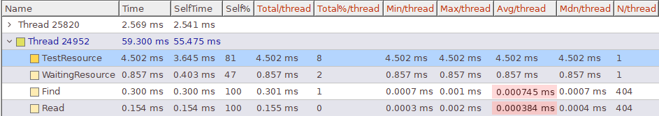
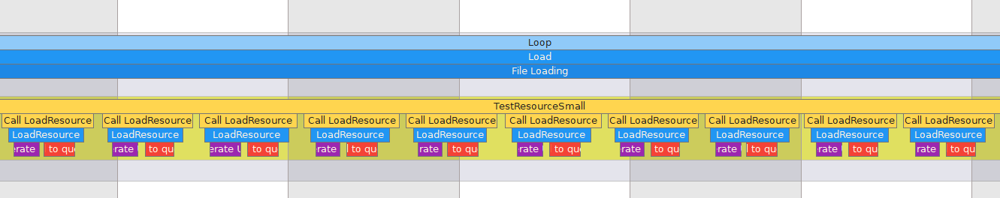

I. Introduction
I worked on the implementation of a resource manager for a game engine developed in C++.
The purpose of the Resource Manager is to load the needed files for the conception of the game (scene, prefabs, materials, ...).
Therefore, it contained a map ordering resource with a ResourceID.
The ResourceID used is a UUIDv4, a unique index coded in 128 bits generate randomly. This ResourceID allows users to get a resource much time.
The Resources are BufferFile, which it's a char* and its size and an integrated loading function.
//ResourceID and BufferFile
For the game engine, we use a Separate Thread Resource Manager. It's a Resource Manager working a thread parallel to the main thread.
This technique allows a big optimization because it allows loading files without interrupt game thread.

Indeed, loading resources is quite a long operation because it requires access to memory.
However, the difficulty with multithreading is to access the same variable with two threads.
A class Separate Thread Resource Manager is composed of 6 critic members :
- status_ : which allows knowing the status of the resource Manager (Empty, Waiting,...)
- idQueue_ : which is the queue of ResourceID needed to be load
- resourcePromise_ : which is a map using ResourceID as key and contain resources information (resources, path, ready)
These members are used by 4 functions on different threads :
Calling from main thread :
- LoadResource : a function asking the path of the resource and return the ResourceID allowing to get the resource
- IsResourceReady : function allowing to know if a resource is loaded
- GetResource : function allowing to get a resource from a ResourceID when it loaded
- LoadingLoop : a loop which loads resources
So, the critical sections can be represented by the diagram below :

To prevent threads from interacting with the same values at the same time, we need to block threads for each use. The objective is then to block members as little as possible.
II. LoadResource
The function LoadResource is composed of 5 actions :- Add a LoadPromise for the future resource
- Add a new ResourceID at the end of the queue
- Notify the threads that a ResourceID has been added
- Set the status to not empty
- Return the ResourceID
So parts 1, 2 and 5 need access to critical members.
However, the first optimization is to past the status_ to atomic. Indeed, atomic is a parameter allowing CPU to access and modify a value at the same time. Therefore, the modification of the status bitflag not need to be locked.
Furthermore, I remarked that the creation of a new UUID can take a lot of time. That why I separate it from the push to the queue and took it out of the critical section.
So, only actions 1 and 3 needed to lock other threads.


III. IsResourceReady & GetResource
The function IsResourceReady search if a resource is ready and the function GetResource will retrieve a resource by its ID.Firstly, I create a resource only when it's ready. However, that implies that I do a find which will go through the whole map to check if the ID exists. That why I decided to create a struct LoadPromise which knows if the resource is ready.
**Picture of the structure**
**Picture showing optimization**

IV. LoadingLoop
This is a loop that will check if the queue is empty. If it's true, it will pause the thread notified. If the queue is not empty, it will do these 4 actions :- Get the first ResourceID of the queue
- Erase this ResourceID from the queue
- Load the resource of the path register
- Set the resource as ready
As seen earlier, the loop can access the status_ without needed to be locked. To check if the queue is empty, I preferred to register it in the status_ avoiding to lock the threads.
As seen at the start, the longest part is the loading. So, I can't let the actions 3 in the critical section. That's why I get the struct, unlock threads, load and modify ready, and lock again to set the promise in the map.


V. Conclusion
** Show benchmark before/after**

To conclude, the important part of my optimization was to reduce the critical section.